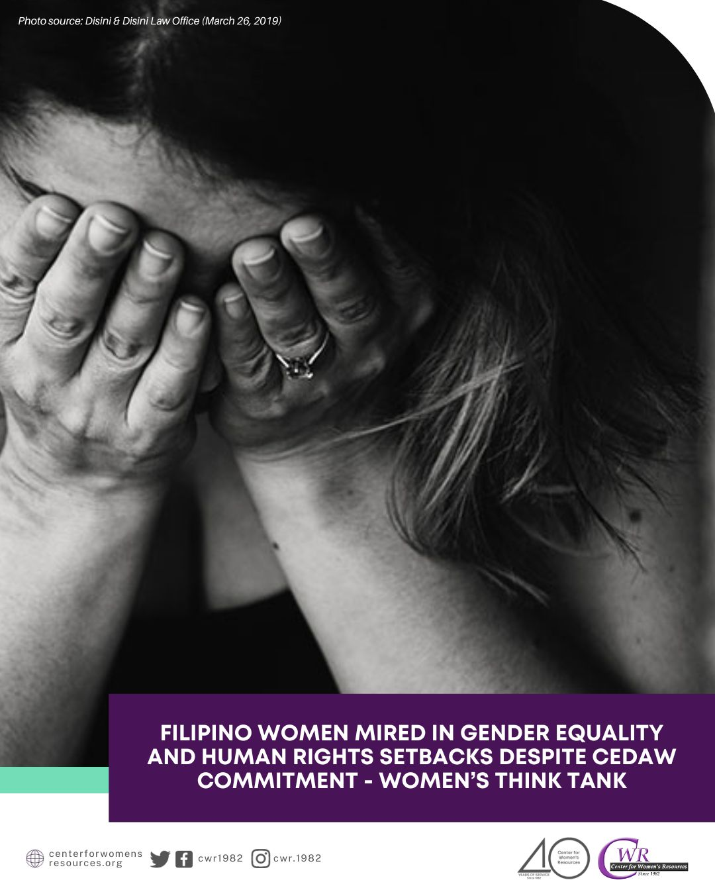
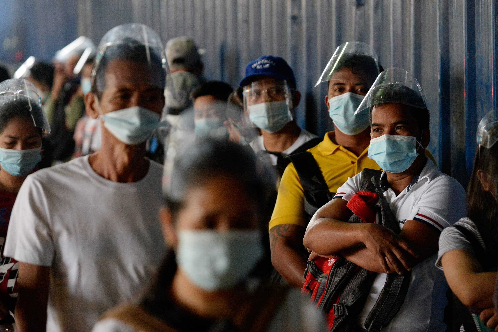

Explore the Causes
Economic Causes
Wealth concentrated in a few families, leaving millions without decent jobs or livelihoods.
Social Causes
Lack of access to education and healthcare deepens divides across Philippine society.
Political Causes
Corruption and dynasties weaken democracy and limit fair opportunities for citizens.
Environmental Causes
Typhoons and floods hit poor areas hardest, pushing families deeper into poverty.
Technological Divide
Many provinces lack internet, transport, and electricity, leaving them disconnected.
Gender Inequality
Women face barriers in the workforce, limiting equality and fair participation.
Indigenous Struggles
Indigenous groups suffer displacement and neglect from government programs.
Healthcare Access
Healthcare is concentrated in cities, leaving rural Filipinos struggling to survive.